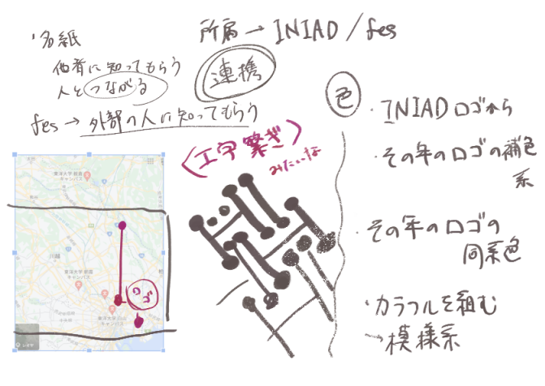
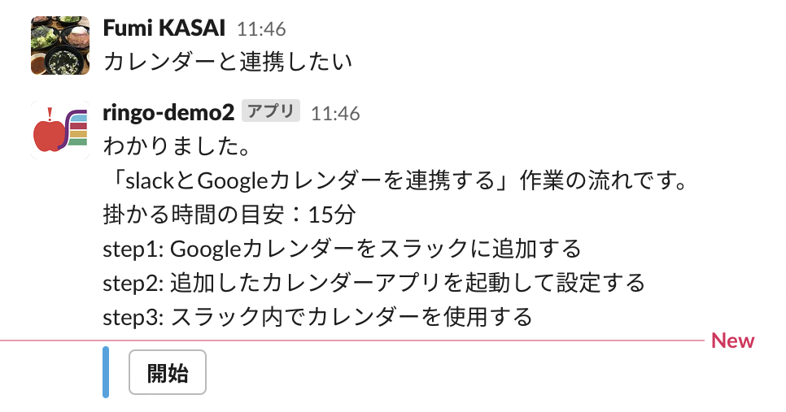

2Dゲーム
Unity, Clip Studio Paint Pro
制作期間:1ヶ月
サークル活動にてチームで制作
2D強制横スクロールアクションゲーム
コード、グラフィック・UIデザイン担当
サークル活動の一環として制作
2021年9月~10月の約１ヶ月間
主にコーディング・デザイン担当
一番の特徴として、プレイヤーはキャラクター2人を同時に操作します。
キャラクターは自分達で走っているため、操作はそれぞれのジャンプのみです。
キャラクターそれぞれが左右にいることを活かし、特定のブロックを踏むと操作画面が左右反転したり、操作ボタンが反転したりするギミックもあります。
本制作はギミックのアイデアなどは主にチームメンバーから貰い、想定挙動になるまで調整を行いました。
一番苦戦したのが画面反転ギミックです。本ゲームではカメラの射影行列を操作して挙動を実現しています。Unityを触るのが初めてで、実装にあたり公式ドキュメント、技術系のサイトなど片っ端から読み漁りました。
実際に出展した大学祭ではオンラインではありましたが多くの来場者様にプレイしていただき好評をいただきました。
まだ実装しきれなかったギミックもあり、グラフィック面でも粗が多く残る作品ですが、同時に愛着も大きく今後のリメイク第一候補です！
プロダクト
Illustrator
制作期間:1ヶ月
大学祭委員会にて制作
実際に渉外活動に利用
大学祭委員会にて制作
2022年6月の1ヶ月間
これまで各年で担当が名刺をデザイン・制作していましたが、通年で使えるデザインを制作することになり企画、デザインをしました。
協賛企業を開拓したい、また大学祭自体も3年ぶりの対面開催ということで情報連携学部をあまり知らない企業・人にターゲットを絞りました。学部のロゴの特徴を混ぜながら、様々な方面での「つながり」の意味を込め、不断長久の意味を持つ工字繋ぎをベースにデザインしました。
Live2Dイラスト
Clip Studio Paint Pro, Live2D Cubism
制作期間:1ヶ月
個人制作
Topページ用Live2Dイラスト
似顔絵などに変わる表現として制作
情報連携デザイン演習ⅢBにて制作。
本サイトにてTopページイラストとして利用している作品です。
サイトへのアクセス時に自分と自身が発信していきたい「ワクワク感」、「楽しさを自分で作り出していきたい」という思いを表現したいと考え、イラストアニメーションを制作しました。
当初、以前制作したLive2Dモデルをユーザー操作によって常に変化する形で展示していましたが、効果と実際稼働する際の実現性を考慮して動画としてループ再生させる現在の形に落ち着きました。
これまで制作に関わらせていただいたイベントや普段利用しているツールなどをふんだんに散りばめた作品になっています。
この形式は、Live2D社様主催の「Alive2022」サイトを参考にさせていただいています。
Live2D Web SDKを用いたサイト制作も今後視野に入れています。
Webデザイン
HTML,CSS,JavaScript
制作期間:1ヶ月
授業演習にて個人制作
OpenWeatherMap APIを利用
天気図形などは自主制作
情報連携デザイン演習ⅡAにて制作。
授業内で紹介されたOpenWeatherMap APIの利用方法以外に郵便番号を指定することで現地の天気を表示できることを利用し、郵便番号による天気検索も導入しました。
当初は住所からから座標を取得できるHeartsRailGEO APIを利用し住所から天気を検索する形を検討していましたが、技術が足りず断念しました。
CSSにはフレームワークとしてBoot Strapを利用しています。技術面で断念した部分もありましたが、その分各地の天気を明日、明後日、1週間後まで見られるようにするなど機能・デザイン面での拡充を行うことができました。
授業内の勉強内容で収めるのではなく、やりたいことがあればまず実現可能な技術を探しに行く現在の指針のきっかけとなった作品です。
アプリ/Webサイト
Slack API, Illustrator
制作期間:1ヶ月
情報連携実習Ⅲにてチームで制作
Slackチャットボットアプリ
アイコン/説明画像/Webサイトデザイン担当
「情報連携実習Ⅲ」の授業にて制作しました。「デジタルデバイド」という全体テーマをもとに、学生にとって一番身近な事務職である事務課にインタビューを行いました。
その結果、他学部に比べてデジタルツールの導入が進んでいる一方で、導入したツールを十全に生かしきれていないということがわかり、そこからツールをより効果的に利用してもらうためにツール間連携やapiと外部サービスを利用したチャットボット制作方法など発展的利用方法を案内するチャットボットを制作しました。今回は学部で主に利用しているツールとしてSlackに焦点を当てSlackアプリを選択しました。
実際にインタビューさせていただいた事務課に再度ご協力いただき効果検証を行いました。また、追加で学部OBで現在会社にてSlackを利用している方にも実験をお願いしました。
プロダクト
Illustrator, Clip Studio Paint Pro
制作期間:2ヶ月
大学祭委員会にてチームで制作
主に中ページ総合担当
大学祭委員会にて4人チームで制作
2022年9月~10月の2ヶ月間
今年度はWeb版と印刷した実物で頒布を行いました。表紙、裏表紙、中に使用するマップ素材を他のメンバーにお願いし、他の構成部分を担当しました。
全体として対面での経験が浅くこれまでの資料も少ない中でしたが、様々な人の力をお借りして無事完成させることができました。
時間の関係でWeb版と紙版で利点によるデザインの差別化まで着手できませんでしたが、開催を経て実際にいただいた意見などから来年に向けて引き継ぎをしました。
今回のパンフレット制作で各部署での情報源の散乱が浮き彫りとなったことで、来年の組織全体の編纂と情報源統一に向けて考える機会になりました。